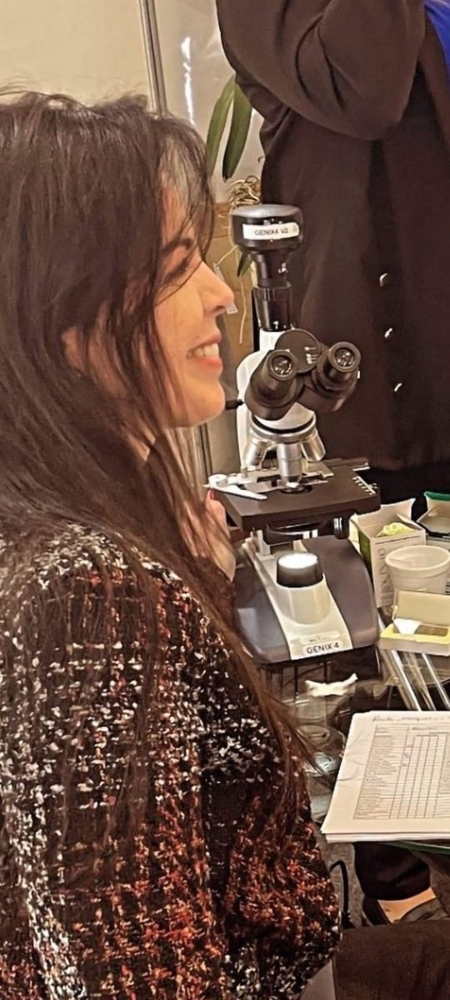

Abordagem Sistêmica
O equilíbrio que você merece.
Transformamos dados em bem-estar e sensibilidade em cura. Dra. Karla Marques guia você em uma jornada integrativa única.



Transformamos dados em bem-estar e sensibilidade em cura. Dra. Karla Marques guia você em uma jornada integrativa única.



Na Saúde Integrativa, acreditamos que cada pessoa carrega uma história única — feita de experiências, emoções e os sinais que o corpo expressa. Não tratamos apenas sintomas, buscamos compreender o indivíduo em sua totalidade: corpo, mente e espírito.
Aqui, o cuidado é construído com presença. Unimos ciência e uma escuta sensível para identificar as reais necessidades do organismo, promovendo equilíbrio e reconexão.
Avaliação Profunda e Sistêmica
Protocolos 100% Individuais
Direção e Acompanhamento Próximo
Foco em Qualidade de Vida Sustentável
"Saúde não é apenas ausência de doença — é harmonia e consciência com aquilo que sustenta a vida."
Agendamento rápido e seguro.
Nosso consultório em São Bernardo do Campo foi planejado para ser um refúgio de cura. Aqui, a Ozonioterapia de última geração se une à precisão da Microscopia de Campo Escuro, permitindo visualizar a vida em movimento no seu sangue.
Mas a tecnologia é apenas uma ferramenta. O verdadeiro diagnóstico acontece quando a Dra. Karla Marques analisa cada exame com tempo, carinho e uma visão sistêmica, decifrando o que o seu corpo tenta dizer.

Microscopia Digital

Ozonioterapia Premium

O Olhar Clínico


Equilíbrio Mental
"A Karla uniu o diagnóstico clínico à sensibilidade. Finalmente entendi o que meu corpo precisava."
Saúde Metabólica
"Interface do sistema impecável e tratamento que realmente funciona na prática."
Foco e Clareza
"O melhor investimento que fiz na minha saúde este ano. O acolhimento é diferenciado."